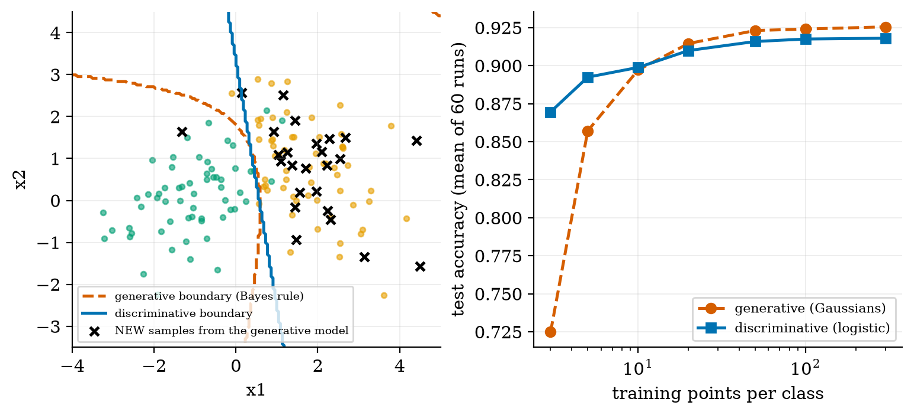
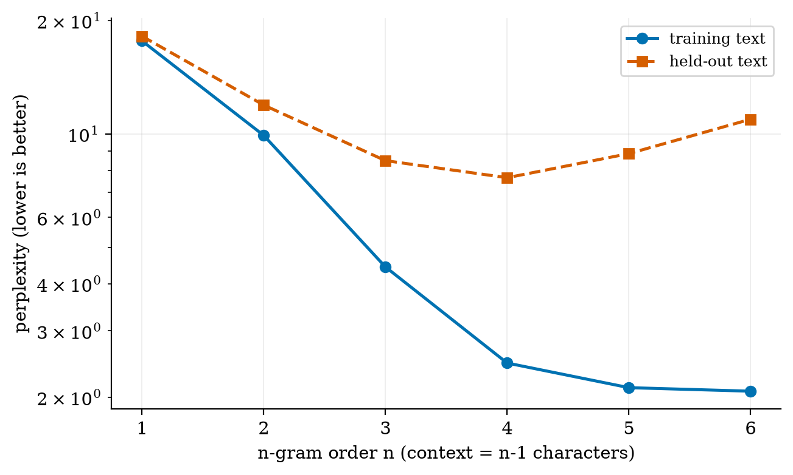
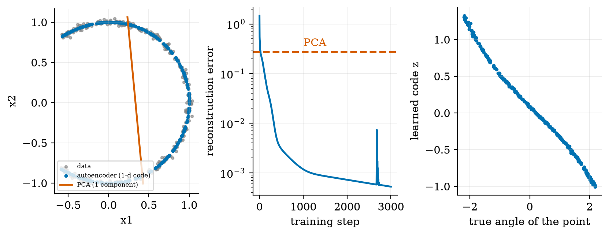
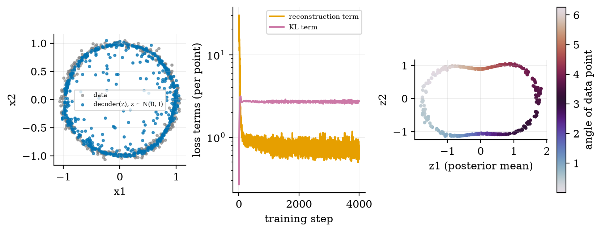
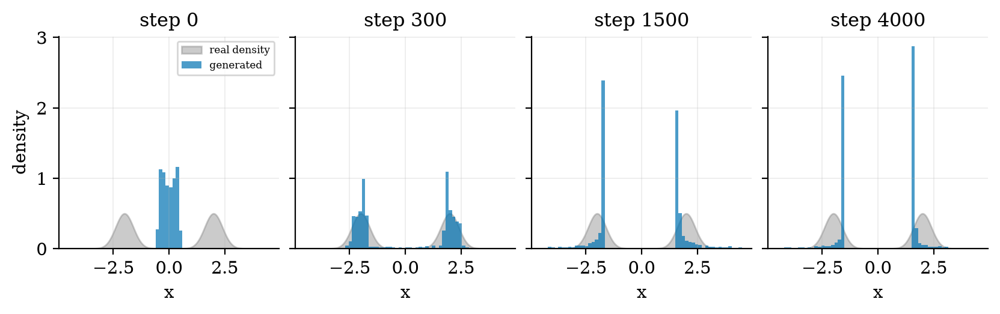

Unit 1 ready
Foundations of Generative AI
Discriminative vs generative models, and the six model families: autoencoders, VAEs, GANs, autoregressive models, diffusion, Transformers.
What you will be able to do
- tell a discriminative model p(y|x) from a generative model p(x), and say what each can and cannot do;
- write the training objective of an autoregressive model, an autoencoder, a VAE, a GAN and a diffusion model in one line each;
- derive the VAE evidence lower bound and the GAN optimal discriminator, and explain the reparameterisation trick;
- build a character-level text generator and read its perplexity on seen and unseen text;
- explain hallucination, bias, privacy and copyright risk as consequences of the training objective, with a measured example.
The big picture
Most machine learning you have met is discriminative: draw a boundary between classes. Generative AI asks for more: learn what the data looks like, so you can produce new examples that were never in the training set.
| family | idea |
|---|---|
| autoregressive | write one piece at a time, each conditioned on the earlier ones |
| autoencoder | squeeze to a short code and rebuild (a compressor, not yet a generator) |
| VAE | autoencoder with a fuzzy code and a prior, so you can sample new codes |
| GAN | a forger and a detective improve each other |
| diffusion | learn to remove noise that was added step by step |
| Transformer | the neural network inside most of the above (an architecture, not a family) |
Key equations
Figures





Try it in the playground
Each link opens the widget with good starting settings. Every option has a plain-English label and a one-line help text.
Generative classifier
Move two Gaussian classes and a probe point; see Bayes' rule produce the probabilities.
Text generator (n-gram)
Write text letter by letter; watch it turn into copying as memory grows.
Run the code yourself
Everything is plain NumPy, including the neural networks (with hand-written backpropagation). After downloading and unzipping the All code (.zip):
pip install -r requirements.txt
python codes/genmodels/genmodels_np/genmodels_np.py # tiny n-gram demo
python codes/genmodels/genmodels_np/tests/test_genmodels_np.py # 7 tests incl. gradient checks, prints: ok
python figures/fig04_vae.py # trains the VAE (a few seconds) and reproduces Figure 4The module has CharNgram, MLP (manual backprop), train_autoencoder, train_vae, train_gan_1d and the classifiers.
Self-check
Answer in your head first, then click to reveal.